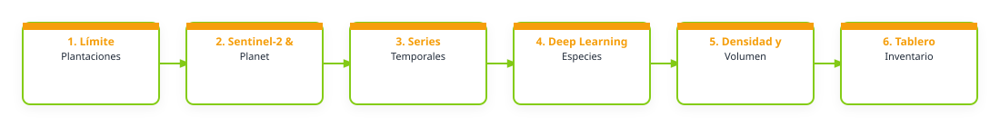

1. Problema que busca atender
En Costa Rica, las plantaciones forestales cumplen funciones productivas, económicas y ambientales; sin embargo, su monitoreo depende frecuentemente de inventarios de campo que requieren tiempo, personal especializado y recursos económicos. Esto dificulta conocer de manera continua su extensión, condición, crecimiento, aprovechamiento y posibles alteraciones. El sector forestal en Costa Raica requiere información actualizada que facilite la planificación y la toma de decisiones. Aunque existen fuentes nacionales e internacionales de información geoespacial como mapas de tipos de bosques (coberturas arbóreas), estos no necesariamente permiten identificar con precisión las características particulares de las plantaciones forestales, siendo fuente de constante confusión con clases similares como bosques y plantaciones de café con sombra, por ejemplo. Con la ayuda de la series temporales satelitales y el aprendizaje profundo, se podría automatizar la identificación y evaluación de plantaciones forestales; no obstante, es necesario determinar su precisión, capacidad de generalización y dependencia de datos de entrenamiento representativos de las condiciones forestales costarricenses. Pregunta central: ¿En qué medida la teledetección y los modelos de aprendizaje profundo permiten monitorear con precisión y de forma periódica las plantaciones forestales de Costa Rica? Objetivo: Construir una serie cronológica anual de mapas de cobertura de plantaciones forestales en Costa Rica.
2. Relevancia del problema
El Laboratorio de Teledetección de Ecosistemas del INISEFOR-UNA ha colaborado en la elaboración de los mapas de tipos de bosque y otras tierras de Costa Rica desarrollados por el SINAC. Estos productos constituyen una fuente oficial para la caracterización y el monitoreo de la cobertura forestal nacional y se encuentran disponibles mediante los servicios geoespaciales del SNIT. No obstante, uno de los aspectos que requiere fortalecimiento es la separabilidad espectral y temporal de las plantaciones forestales respecto de otras coberturas arbóreas, particularmente los bosques naturales y los sistemas agroforestales. Esta dificultad puede generar confusiones durante los procesos de clasificación y afectar la precisión temática de los mapas. Por ello, la generación de una capa nacional de plantaciones forestales, actualizable anualmente mediante series temporales de imágenes satelitales y modelos de aprendizaje profundo, podría funcionar como información auxiliar para futuras actualizaciones de los mapas de tipos de bosque. Además, permitiría identificar cambios asociados con el establecimiento, crecimiento, aprovechamiento y sustitución de las plantaciones.
3. Producto esperado
Tipo de entregable: Mapa; Capa geoespacial; Reporte; Dashboard / tablero; Visor web; Base de datos; Repositorio técnico
Descripción del producto: El producto esperado consiste en un sistema para el monitoreo anual de las plantaciones forestales de Costa Rica mediante teledetección y modelos de aprendizaje profundo. Incluirá un mapa nacional y capas geoespaciales anuales que permitan identificar, delimitar y consultar la distribución de las plantaciones forestales, así como diferenciarlas de bosques naturales, sistemas agroforestales y otras coberturas arbóreas. Las capas generadas estarán organizadas en una base de datos geoespacial y podrán visualizarse, consultarse y descargarse mediante un visor web y un tablero interactivo. El sistema permitirá explorar estadísticas por año y unidad territorial, comparar cambios temporales y consultar información sobre superficie, localización y nivel de confianza de la clasificación. Asimismo, se generarán reportes automatizados con los principales resultados del monitoreo. Los datos, metadatos y códigos utilizados para el procesamiento, entrenamiento, validación y actualización de los modelos se organizarán en un repositorio institucional, con el propósito de facilitar la reproducibilidad y la actualización periódica del producto. Los resultados podrán utilizarse como información auxiliar para mejorar la separabilidad de las plantaciones forestales en futuras actualizaciones de los mapas de tipos de bosque y otras tierras de Costa Rica elaborados por el SINAC.
Componentes de despliegue sugeridos: Repositorio GitHub; Dashboard
Nivel de acceso previsto: publico
Forma de uso institucional: Como una capa georeferenciada, con sus respectivos metadatos que se puede descargar libremente.
Requiere actualización: si
Frecuencia / Método de actualización: Año a año.
4. Flujo de trabajo preliminar
El siguiente diagrama conceptualiza el procesamiento de datos y flujo técnico sugerido para la solución:

Descripción del flujo metodológico imaginado:
El flujo inicia con la generación de un mosaicos anuales de imágenes satelitales. A partir de este insumo, la clase de cobertura se modela por separado mediante procesos de clasificación y filtros espaciales y temporales. Esta etapa requiere varias iteraciones para balancear las muestras, incorporar diferencias regionales y ajustar los filtros. Sobre un primer producto se calculan las transiciones entre años y se aplican filtros espaciales para reducir errores, eliminar ruido y resolver conflictos de falsos positivos, etc. La integración se revisa entre tres y cinco veces, ajustando reglas generales y específicas para mejorar las estimaciones. Finalmente, se calculan las estadísticas de superficie y se realiza la evaluación de exactitud. Los resultados se incorporan a una base de datos y se publican mediante un visor web o tablero interactivo. El sistema se actualizaría anualmente con nuevas imágenes, datos de referencia, modelos y herramientas, apoyando futuras versiones de los mapas de tipos de bosque de Costa Rica.
Algoritmos o índices clave: En principio se usará Random Forest y posterioremente alguna red neuronal.
5. Datos e insumos identificados
Insumos satelitales y capas locales necesarias para el despliegue del prototipo:
| Insumo / Variable | Detalle en la Ficha |
|---|---|
| Datos Satelitales / Fuentes Copernicus | Sentinel-1 / radar SAR; Sentinel-2 / óptico; Copernicus DEM; Productos/índices de vegetación; Límites locales / institucionales |
| Datos Locales Disponibles | Se utilizarán diversas fuentes que ya poseo. |
| Datos Requeridos / Faltantes | Por ahora todo está |
| Documento Relacionado | No indicado en la ficha |
| Enlaces Externos / Observaciones | No indicado en la ficha |